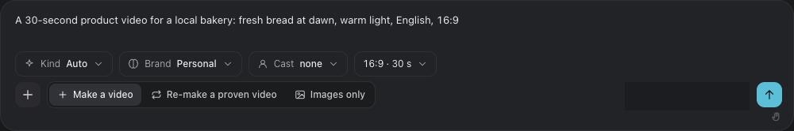
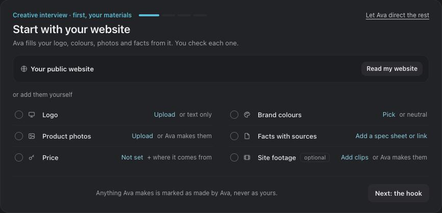
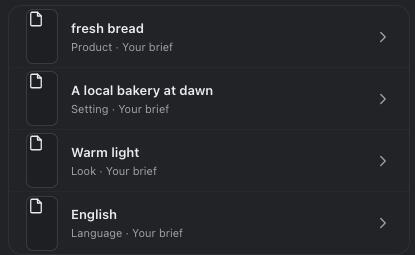
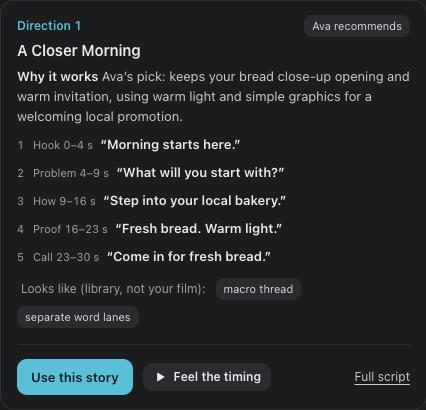
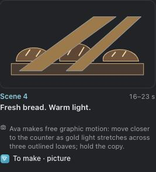
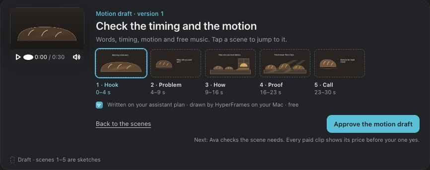
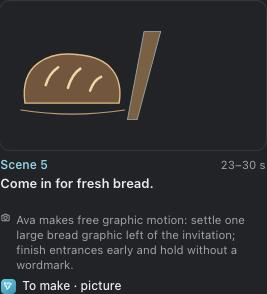
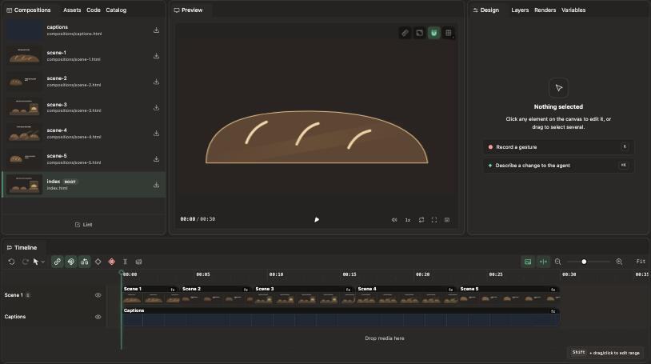

Your first video
Brief → stories → scenes → motion draft → pictures and clips → Timeline.
At the end: You can play a motion draft and open Timeline.
Finish Session 1. Start with a short idea. This example makes a bakery video with free bread sketches.
The steps add to 60 minutes. Pause when you need to. Making files can take longer.
Write your brief
8 minOn Home, choose Make a video. Describe what to show, the length, language and ending.
Use + to add your photos, logo or files. Send the brief once it says what you want.


Answer Ava’s questions
8 minCheck the kind of video Ava picked. Change it if it does not fit.
Add the materials you want Ava to use. Read the sharing card before you allow a tool.
Answer the creative questions, or choose Let Ava direct the rest.


Check the plan
7 minRead the summary. Check your subject, setting, look and language.
Tap a line to change it. Choose Write the stories when the summary is right.


Choose one story
7 minRead both directions. Use Feel the timing to compare them.
Choose Use this story under the one you want. Use Two new stories if neither fits.


Approve the timed scenes
8 minA scene is one part of the film. Read each scene’s words, time and materials.
Ask for a change in chat if needed. Choose Approve the timed scenes when they match your brief.


Play and approve the motion draft
10 minPlay the motion draft from start to end. Check the words and timing.
Choose Approve the motion draft when it is right. Read each check marked needs you before you approve.


Check pictures and clips
5 minAfter draft approval, read Ava’s plan for pictures and clips. Pictures use ChatGPT through Codex, or Grok.
Check each returned picture. Open any check that says needs you.
If a clip asks for a price, choose Keep the sketch for this session. Keep the plan-only choice.


Open Timeline
7 minOpen Timeline to see the film in layers. Use Play to check it.
Session 3 takes this same bakery film through export and exact-file approval.

